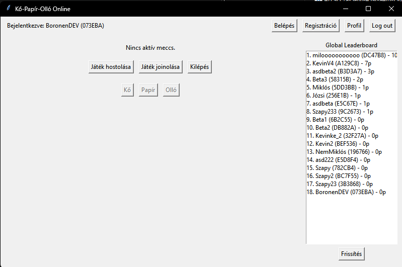
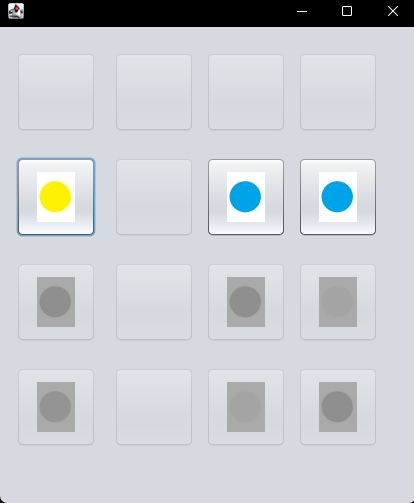
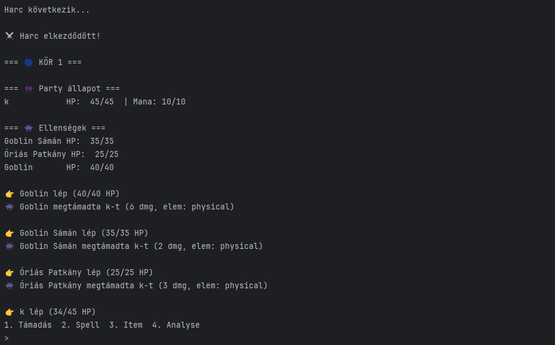
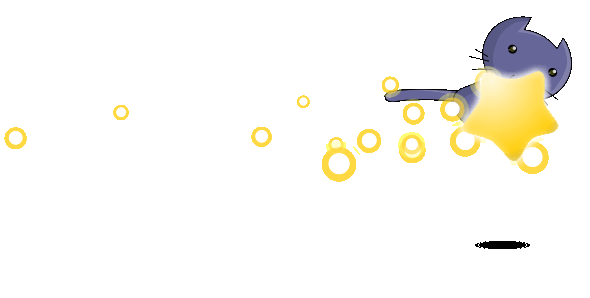
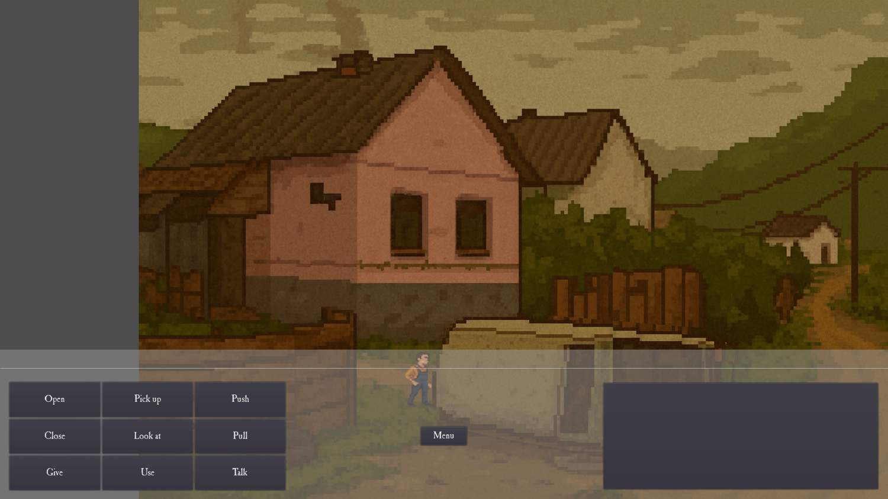
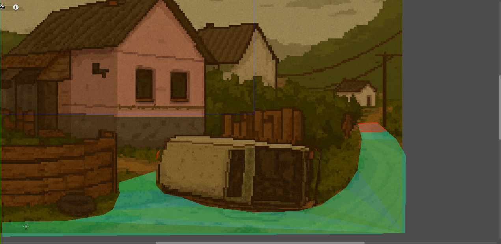
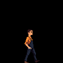

RPS Online
Online kő-papír-olló játék, ahol a fókusz a jól átlátható játéklogikán és a struktúrált kódon volt.
Kategória: Programozás
Technológiák: Python, GitHub
GitHub: github.com/Boronen/RPS_Online
Ezen az oldalon bemutatom a legfontosabb programozási, file architecting és játékfejlesztési munkáimat. A projektek között találsz iskolai feladatokat, saját ötleteket és hosszabb távú játékprojekteket is.

Online kő-papír-olló játék, ahol a fókusz a jól átlátható játéklogikán és a struktúrált kódon volt.
Kategória: Programozás
Technológiák: Python, GitHub
GitHub: github.com/Boronen/RPS_Online

Egy kísérleti játékprojekt, ahol a cél a játékmenet és a logikai rendszerek finomhangolása volt.
Kategória: Programozás
GitHub: github.com/Boronen/golok

Story-alapú, Pythonban írt játék, ahol a döntések és az állapotkezelés fontos szerepet játszanak.
Kategória: Programozás
Technológiák: Python, szöveges kalandjáték mechanikák
GitHub: GitHub – alpha release

Ebben a projektben egy meglévő játék fájlstruktúráját elemeztem és módosítottam, hogy saját concept artokat és tartalmakat építsek bele.
Rövid bemutató: HxD-vel hex szinten néztem a fájlokat, Resource Hackerrel az erőforrásokat kezeltem, JPEXS-szel pedig a beágyazott grafikai elemeket vizsgáltam. A cél az volt, hogy megértsem, hogyan épül fel egy játék “a motorháztető alatt”, és hogyan lehet ezt kreatív módosításokra használni.
Használt programok: HxD editor, Resource Hacker, JPEXS
A Project PP egy point and click kalandjáték, amelynek főhőse Feri, Nagyhuta egyik lakója. Feri nagy álma, hogy kitörjön az ottani szegénységből, maga mögött hagyja az elszigetelt falusi életet, és politikusként kezdjen új életet a nagyvárosban.
A probléma az, hogy szinte minden ez ellen dolgozik: nincs busz, nincs vonat, nincs pénze, a munkalehetőségek pedig gyakorlatilag nem léteznek. A játék célja, hogy a játékos végigkísérje Ferit ezen az abszurd, néha keserédes úton, ahol minden apró döntés számít.
Az atmoszféra egy magyar falu hangulatát idézi, keverve a valós társadalmi problémákat humorral és szatirikus elemekkel. A játékban fontos szerepet kap a történetmesélés, a karakterek belső motivációi és a remény, hogy még a leglehetetlenebb helyzetből is van kitörési pont.



Az egyes projektek GitHub oldalán megtalálhatók a forráskódok és esetleges letölthető verziók.